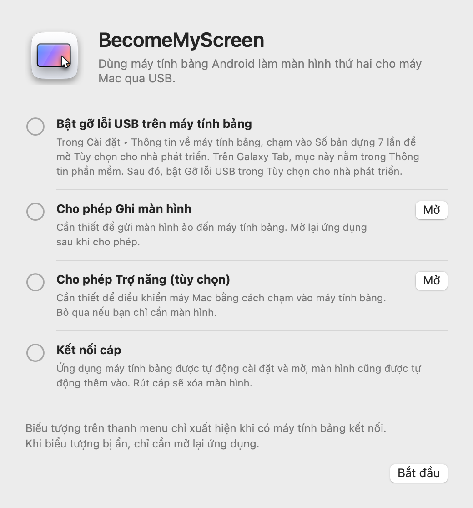
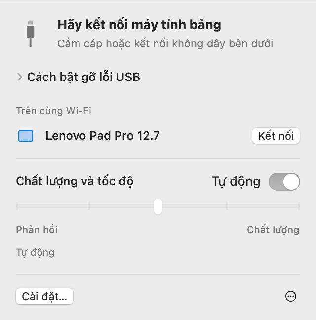
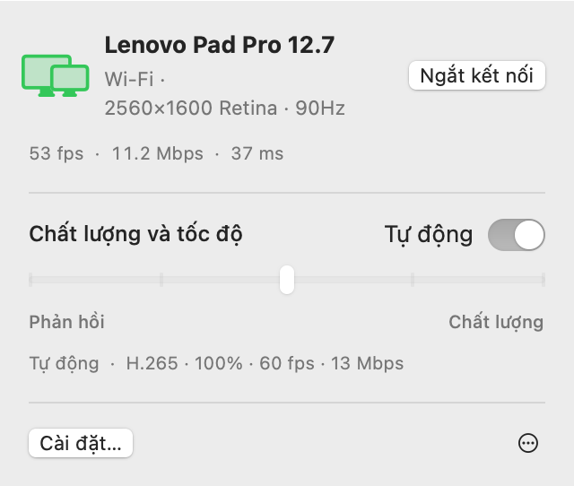
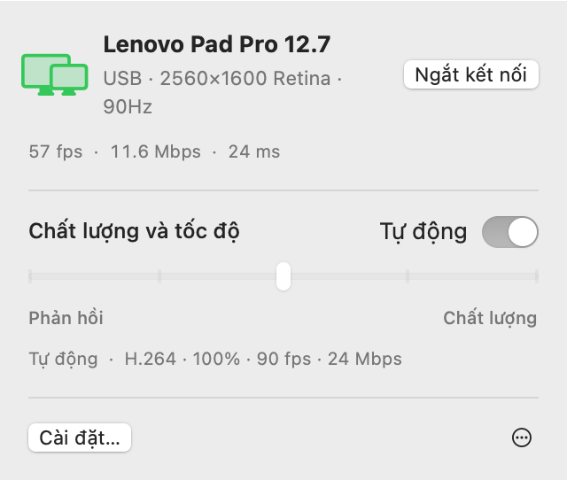
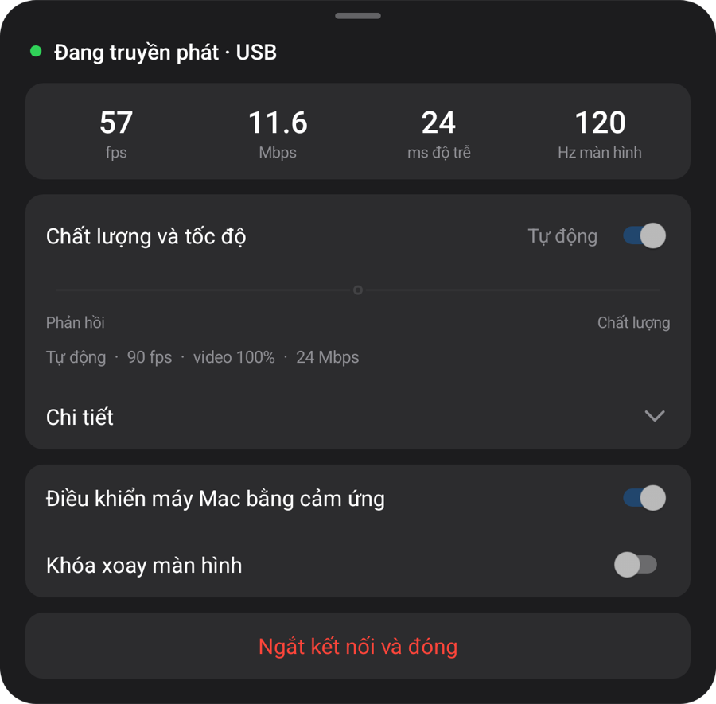
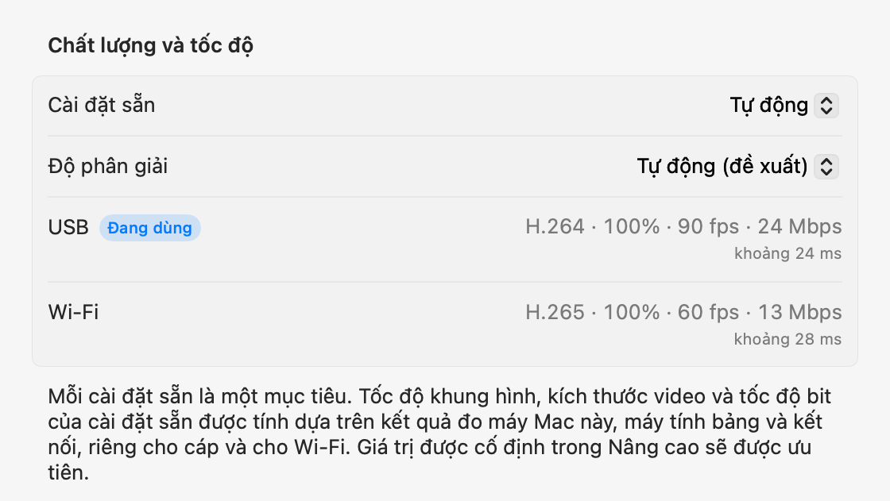

macOS + Bản xem trước Windows
Máy tính bảng của bạn.
Màn hình máy tính của bạn.
Màn hình phụ cho Mac. Bản xem trước phản chiếu màn hình cho Windows. Kết nối máy tính bảng Android qua USB; máy tính sẽ cài và mở ứng dụng trên máy tính bảng.
Mở tệp zip, di chuyển ứng dụng vào thư mục Ứng dụng rồi mở. Đối với lần kết nối đầu tiên, hãy xem Thiết lập.
Mở trang này trên máy tính để tải ứng dụng cho Mac hoặc Windows.

1.0.0 Preview 1
Bản xem trước Windows
Đã có trên Windows 11. Ứng dụng gốc cho Intel/AMD x64 và ARM64 trong một bản tải xuống.

Giải nén toàn bộ ZIP rồi chạy Start-Mirroring.cmd. Trong máy ảo, dùng Start-Mirroring-VM.cmd. Bật gỡ lỗi USB trên máy tính bảng và cho phép kết nối. Bộ xử lý video tự tải khi mở lần đầu; cần Internet.
Các hướng dẫn, tính năng và số đo bên dưới dành cho bản Mac. Với Windows, xem hướng dẫn bản xem trước ở trên.
Thiết lập
Bạn chỉ cần thiết lập một lần. Sau đó, cắm cáp là màn hình được thêm vào, còn trên cùng Wi‑Fi thì kết nối không cần cáp.
-
Cài đặt ứng dụng Mac
Mở tệp zip đã tải về, di chuyển BecomeMyScreen vào thư mục Ứng dụng rồi mở. Cho phép Ghi màn hình, sau đó mở ứng dụng thêm một lần nữa.
-
Bật gỡ lỗi USB trên máy tính bảng
Trong Cài đặt › Thông tin về máy tính bảng, chạm vào Số bản dựng bảy lần để mở Tùy chọn cho nhà phát triển. Trên Galaxy Tab, mục này nằm trong Thông tin phần mềm. Sau đó, bật Gỡ lỗi USB trong Tùy chọn cho nhà phát triển.
-
Kết nối cáp
Khi máy tính bảng hỏi có cho phép gỡ lỗi USB không, hãy chọn “Luôn cho phép từ máy tính này” rồi chạm vào Cho phép. Máy Mac sẽ cài đặt và mở ứng dụng máy tính bảng, sau đó thêm màn hình. Bạn không cần tải riêng ứng dụng máy tính bảng.

Tốc độ
Thời gian từ lúc máy Mac chụp màn hình đến khi máy tính bảng vẽ hình đó. Đo bằng Lenovo Pad Pro 12.7 và máy Mac M4 Pro.
| Kích thước video | 60 fps | 120 fps |
|---|---|---|
| 100%2560×1600 | 20 ms | 24 ms |
| 75%1920×1200 | 14 ms | 19 ms |
| 50%1280×800 | 11 ms | 16 ms |
Bộ mã hóa phần cứng trong Apple silicon nén màn hình sang H.264 và gửi qua USB, còn bộ giải mã phần cứng của máy tính bảng vẽ từng khung hình ngay khi nhận được. Ở lần kết nối đầu tiên, chế độ Tự động đo xem bộ giải mã xử lý được bao nhiêu và chọn tốc độ khung hình cao nhất mà không bị tụt lại. Trên máy tính bảng này, chế độ đã chọn 90 fps.
Cách đo: sau khi hiệu chỉnh chênh lệch đồng hồ giữa hai thiết bị, chúng tôi đo thời gian từ lúc máy Mac chụp một khung hình đến lúc máy tính bảng vẽ khung hình đó.
Không dây
Máy tính bảng đã kết nối một lần qua USB cũng hoạt động không dây trên cùng Wi‑Fi. Rút cáp khi đang làm việc thì màn hình vẫn tiếp tục qua Wi‑Fi.
- Kết nối
- Mở ứng dụng trên máy tính bảng và máy sẽ xuất hiện trong danh sách “Trên cùng Wi‑Fi” trên thanh menu của máy Mac. Bấm Kết nối là màn hình hiện lên.
- Rút cáp
- Kết nối chuyển sang Wi‑Fi trong vòng một giây. Màn hình ảo và bố cục cửa sổ vẫn giữ nguyên, cắm lại thì sẽ quay về USB.
- Bảo mật
- Khóa cho kết nối không dây chỉ được trao đổi qua cáp USB. Kết nối chỉ được thiết lập sau khi khóa được xác minh, đồng thời màn hình và đầu vào đều được mã hóa bằng AES-256-GCM.
- Điều tiết thích ứng
- Máy tính bảng xác nhận từng khung hình nhận được, còn máy Mac bỏ qua số khung hình bị chậm và điều chỉnh tốc độ bit. Ngay cả khi Wi‑Fi chậm đi trong giây lát, độ trễ cũng không bị dồn lại.


| Kết nối | Độ trễ | Ghi chú |
|---|---|---|
| USB | Khoảng 20–25 ms | Tốc độ khung hình tối đa của máy tính bảng |
| Wi‑Fi 5 GHz | 40–55 ms | 60 fps; tốc độ bit tự động tăng đến mức cài đặt chất lượng |
| Wi‑Fi 2.4 GHz | 40–65 ms | Độ trễ đôi khi vọt lên quá 100 ms, có thể trông như bị giật |
Đo bằng Lenovo Pad Pro 12.7 ở 2560×1600 với nội dung thay đổi liên tục. Nếu máy tính bảng dùng Wi‑Fi 2,4 GHz, ứng dụng sẽ đề xuất chuyển sang 5 GHz.
Chất lượng và phản hồi
Chọn một trong năm mức hoặc để ở Tự động. Thay đổi từ thanh menu của máy Mac hay từ menu trên máy tính bảng thì cả hai bên đều thay đổi theo.
| Cài đặt sẵn | Tốc độ khung hình | Kích thước video | Tốc độ bit |
|---|---|---|---|
| Tự động | 90 fps | 100% | 24 Mbps |
| 1Phản hồi nhanh nhất | 120 fps | 50% | 8 Mbps |
| 2Phản hồi nhanh | 120 fps | 75% | 14 Mbps |
| 3Cân bằng | 90 fps | 100% | 24 Mbps |
| 4Chất lượng cao | 90 fps | 100% | 33 Mbps |
| 5Chất lượng tốt nhất | 60 fps | 100% | 39 Mbps |
Đo bằng Lenovo Pad Pro 12.7 (2560×1600, 120 Hz) và máy Mac M4 Pro, kết nối qua USB. Mỗi cài đặt sẵn là một mục tiêu: trên máy Mac hoặc máy tính bảng khác, và khi dùng Wi‑Fi, cài đặt sẵn sẽ tự tính ra giá trị riêng từ kết quả đo. Cài đặt sẵn Tự động giống với Cân bằng.
Kích thước video được đặt riêng với độ phân giải mà máy Mac thấy. Video nhỏ hơn vẫn lấp đầy màn hình máy tính bảng, đồng thời giảm tải cho bộ giải mã và giảm độ trễ tương ứng.
Ở lần kết nối đầu tiên, ứng dụng đo cáp, bộ mã hóa video của máy Mac này và bộ giải mã của máy tính bảng ở từng chế độ, trong khoảng 10 giây; lần đầu kết nối qua Wi‑Fi, ứng dụng đo mạng. Mọi cài đặt sẵn đều được điều chỉnh theo các số liệu này, riêng cho cáp và cho Wi‑Fi, và trong cài đặt Nâng cao, bạn có thể cố định bất kỳ giá trị nào cho từng kết nối. Nếu cáp chậm, bạn sẽ được nhắc thay cáp.



Cảm ứng
Chạm vào máy tính bảng và máy Mac sẽ nhận thao tác đó như đầu vào chuột. Tính năng này bật khi bạn cho phép Trợ năng trên máy Mac.
| Trên máy tính bảng | Trên máy Mac |
|---|---|
| Chạm | Bấm |
| Kéo | Kéo |
| Kéo bằng hai ngón tay | Cuộn |
| Chạm bằng hai ngón tay | Bấm chuột phải |
| Chạm bằng ba ngón tay | Mở menu trên máy tính bảng |
| Vẽ bằng bút | Đến máy Mac dưới dạng đầu vào bảng vẽ, kèm lực nhấn và độ nghiêng |
| Di bút hoặc chuột phía trên màn hình | Di chuyển con trỏ. Chạm trong khi giữ nút bút để bấm chuột phải |
Con trỏ quay về chỗ cũ
Khi bạn chạm vào máy tính bảng, con trỏ của máy Mac sẽ di chuyển đến vị trí đó. Sau đó, chỉ cần di chuột một chút là con trỏ quay về vị trí trước khi chạm, nên bạn không phải kéo con trỏ về công việc đang làm trên màn hình chính. Bạn có thể tắt tính năng này trong Cài đặt.
Chi tiết
- Biểu tượng trên thanh menu
-
Biểu tượng chỉ hiển thị khi có máy tính bảng kết nối. Khi biểu tượng bị ẩn, hãy mở lại ứng dụng và biểu tượng sẽ xuất hiện trong giây lát với bảng đang mở.
- Đang chờ
- Đang chuẩn bị
- Đang dùng
- Cần chú ý
- Mở ứng dụng máy tính bảng
- Nếu ứng dụng máy tính bảng không chạy khi bạn cắm cáp, máy Mac sẽ mở ứng dụng và đánh thức màn hình nếu màn hình đang tắt. Máy Mac không bao giờ bỏ qua màn hình khóa.
- Cập nhật
- Ứng dụng Mac kiểm tra phiên bản mới và tự cập nhật khi bạn chọn. Nếu có kèm ứng dụng máy tính bảng mới hơn, máy tính bảng sẽ được cập nhật qua cáp trước khi màn hình bắt đầu.
- Hướng dọc
- Xoay máy tính bảng sang hướng dọc và màn hình ảo cũng được tạo lại theo hướng dọc.
- Tần số quét và thời gian chờ màn hình
- Trong khi truyền phát, tần số quét của máy tính bảng được giữ nguyên để không giảm xuống 60 Hz, và màn hình không tắt.
- Kiểm tra cáp
- Nếu USB kết nối ở tốc độ dưới 480 Mbps, tốc độ truyền luôn dưới 8 MB/s, hoặc kết nối bị ngắt ba lần trong vòng ba phút, ứng dụng sẽ đề xuất thử cáp hoặc cổng khác.
- Khi mất kết nối
- Nếu cáp bị tuột, màn hình sẽ tiếp tục qua Wi‑Fi. Nếu không thể tiếp tục không dây, màn hình ảo được giữ lại trong chốc lát, và nếu máy tính bảng kết nối lại trong thời gian đó, bố cục cửa sổ vẫn được giữ nguyên như cũ.
- Ngắt kết nối và Kết nối lại
- Bấm Ngắt kết nối trong thanh menu thì màn hình của máy tính bảng sẽ tạm ngừng, ngay cả khi cáp vẫn cắm. Bấm Kết nối lại để tiếp tục.
- Ứng dụng máy tính bảng tự đóng
- Khi máy tính bảng hoàn toàn không cắm gì, kể cả bộ sạc, ứng dụng máy tính bảng sẽ tự đóng sau 10 giây. Nếu có thể chờ kết nối không dây thay vào đó, ứng dụng sẽ chờ 2 phút.
Yêu cầu
- Mac
- Máy Mac có Apple silicon, macOS 14 trở lên
- Windows
- Windows 11 · Intel / AMD x64 · ARM64 · Bản xem trước Windows
- Máy tính bảng
- Android 8.0 trở lên, trên thiết bị có thể bật gỡ lỗi USB
- Cáp
- Cáp USB hỗ trợ truyền dữ liệu. Cáp chỉ sạc sẽ không kết nối được. Cổng trên chính máy Mac ổn định hơn bộ chia.
- Không dây
- Máy Mac và máy tính bảng cần dùng cùng Wi‑Fi; nên dùng 5 GHz. Lần kết nối đầu tiên phải qua USB.
- Quyền trên máy Mac
- Ghi màn hình. Thêm Trợ năng để điều khiển máy Mac bằng cảm ứng và Mạng cục bộ để dùng không dây.
Câu hỏi thường gặp
Bản xem trước Windows
Bản xem trước này phản chiếu màn hình hiện có. Windows đã chặn cài trình điều khiển trong môi trường ARM64 thử nghiệm; hãy dùng ZIP trên máy bị ảnh hưởng. Màn hình mở rộng trên máy x64 thực chưa được xác minh. Ghi chú phát hành và giới hạn
Tôi có cần cài ứng dụng trên máy tính bảng không?
Không. Ứng dụng máy tính bảng nằm sẵn trong ứng dụng Mac, nên khi bạn cắm cáp, máy Mac sẽ cài đặt và mở ứng dụng đó. Khi bạn cập nhật ứng dụng Mac, ứng dụng máy tính bảng cũng được cập nhật theo ở lần kết nối tiếp theo.
Có dùng được qua Wi‑Fi không?
Có. Sau khi kết nối một lần qua USB, từ đó trở đi máy sẽ kết nối không dây trên cùng Wi‑Fi. Mở ứng dụng trên máy tính bảng và bấm Kết nối trên thanh menu của máy Mac, hoặc chỉ cần rút cáp khi đang dùng. Độ trễ cao hơn một chút so với USB (40–55 ms trên 5 GHz), và Wi‑Fi 2,4 GHz đôi khi có thể bị giật, vì vậy nên dùng 5 GHz.
Tại sao lần kết nối đầu tiên phải qua USB?
Vì khóa cho kết nối không dây chỉ được trao đổi qua cáp. Nhờ vậy, không thiết bị nào khác trên cùng Wi‑Fi có thể giả làm máy tính bảng của bạn để kết nối với máy Mac. Ứng dụng máy tính bảng cũng được cài đặt vào lúc đó.
Lực nhấn của bút có hoạt động không?
Có. Lực nhấn và độ nghiêng của bút đến macOS dưới dạng đầu vào bảng vẽ (lực nhấn, độ nghiêng và độ gần). Ứng dụng dùng đầu vào bút cảm ứng tiêu chuẩn của Android, nên S Pen và bút Lenovo không cần thêm SDK hay trình điều khiển. Đã thử với bút dành cho Lenovo Pad Pro 12.7.
Ứng dụng hoạt động với những máy tính bảng nào?
Mọi máy tính bảng chạy Android 8.0 trở lên và có thể bật gỡ lỗi USB. Việc phát triển và đo lường được thực hiện trên Lenovo Pad Pro 12.7 (2944×1840, 120 Hz); các thiết bị khác chưa được thử trực tiếp. Độ phân giải và hướng của màn hình ảo theo màn hình của máy tính bảng khi kết nối.
Tại sao ứng dụng không có trên App Store?
Việc tạo màn hình ảo dựa vào một tính năng không công khai của macOS, nên ứng dụng không thể phát hành trên App Store. Thay vào đó, ứng dụng được ký bằng chứng chỉ nhà phát triển Apple và được Apple công chứng, nên bạn có thể mở ngay sau khi tải về.
Tại sao ứng dụng cần Ghi màn hình và Trợ năng?
Ghi màn hình dùng để ghi lại màn hình ảo và gửi đến máy tính bảng, Trợ năng chuyển thao tác chạm và bút trên máy tính bảng thành đầu vào cho máy Mac, còn Mạng cục bộ dùng để tìm máy tính bảng trên cùng Wi‑Fi. Hình ảnh màn hình chỉ truyền qua cáp USB hoặc trong mạng Wi‑Fi của bạn (được mã hóa khi không dây) và không bao giờ đi ra internet.
Kết nối liên tục bị ngắt.
Hãy thử cáp khác có hỗ trợ truyền dữ liệu, hoặc cắm trực tiếp vào cổng trên máy Mac thay vì qua bộ chia. Ứng dụng sẽ báo trước cho bạn khi USB kết nối chậm hoặc thường xuyên bị ngắt. Sau một lần ngắt ngắn, màn hình ảo được giữ trong 15 giây và tiếp tục từ chỗ đã dừng.
Nếu máy tính bảng đang khóa thì sao?
Máy Mac sẽ đánh thức màn hình và mở ứng dụng, nhưng không bao giờ bỏ qua màn hình khóa. Mở khóa bằng mã PIN hoặc hình mở khóa là kết nối ngay.
Ứng dụng có hoạt động trên máy Mac Intel không?
Phiên bản hiện tại chỉ dành cho máy Mac có Apple silicon.
Tải về
Mở trang này trên máy tính để tải ứng dụng cho Mac hoặc Windows.
Mở tệp zip, di chuyển ứng dụng vào thư mục Ứng dụng rồi mở. Đối với lần kết nối đầu tiên, hãy xem Thiết lập.